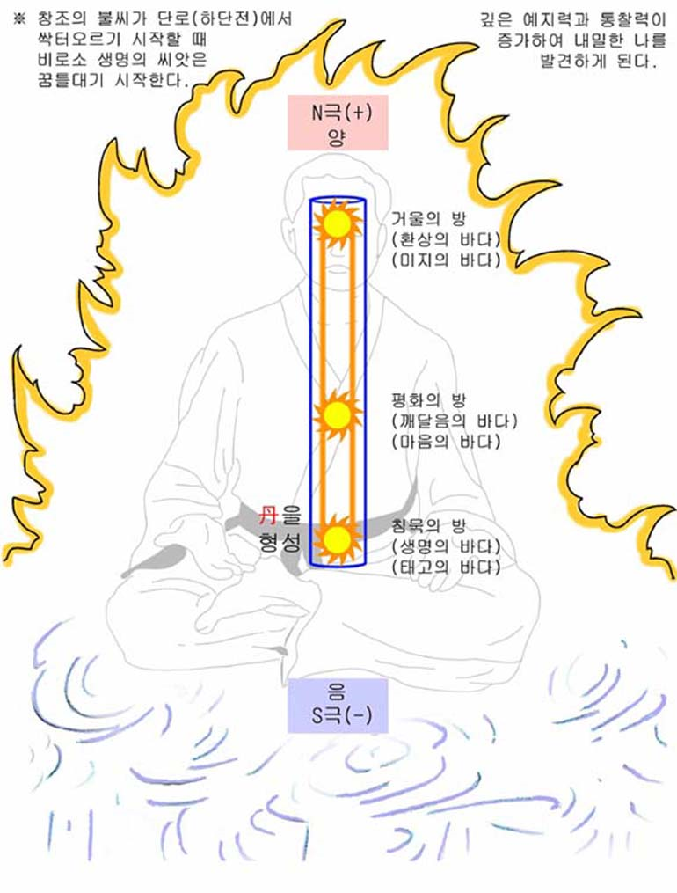

인체전자석의 원리
‘인체전자석의 원리’는 필자가 호흡법을 청아당님께 지도받을 때 전해 들은 것으로, 당시 고전적인 표현밖에 없었던 ‘정·기·신(精·氣·神)’의 원리를 청아당님 특유의 직관적인 방식으로 풀어낸 것이다.
이러한 종류의 심상화(心想化)는 신단(神丹)의 원리와 동일한 맥락에서 작용하며, 생명에너지를 끌어들이고 축적하는 역할을 한다. 즉, 인체전자석을 세우고 명상을하면, 그것이 신단(神丹)이기도 하다.
단(丹)을 의식하거나, 소주천·대주천·경락 유통과 같은 운기법 역시 마찬가지다. 이는 모두 상념(想念)은 곧 에너지이며, 현상화(現象化) 되기 때문이다.
인체전자석의 원리는 이러한 심상화(心想化) 중에 가장 정점에 서있으며, 모든 심상화(心想化) 기법을 하나로 엮어 인체전자석으로 귀결시킨다.
아무튼, 단전호흡을 하는 이유는 ‘정·기·신(精·氣·神)’이 본래의 목적대로 작동하게 만드는 데 있으며, 인체전자석은 ‘정·기·신(精·氣·神)’을 통합하고, 하늘(天)과 땅(地)과 인간(人)을 하나로 잇는 가교로 작용한다.
막연한 생각은 막연한 생명에너지와 연결되어, 생명에너지를 효과적으로 축적하는 데 장애가 될 수 있다. 무슨 일이든 집중력과 정성을 기울여야 소기의 목적에 가까워질 수 있다는 점을 이해해야 한다.
그렇다고 ‘인체전자석의 원리’가 어려운 것은 아니다.
단지, ‘정·기·신’이 통합된 ‘생명에너지의 줄기’를 떠올리면 그만이다.
어렵게 생각하면 끝이 없다.

즉, 단순히 ‘상·중·하(上·中·下) 단전’, 즉, ‘정·기·신(精·氣·神)’을 잇는 ‘생명에너지의 줄기를 상상력을 이용해서 그려 보기도 하고, 정·기·신(精·氣·神)’의 에너지가 서로 흡인력을 가지며 연결되어 있다는 입체적인 생각도 좋다.
어떤 것이든 상관이 없다. 자신이 편하고 생각하기 쉽다면 그것이 상책인 것이다.
한 가지 방법도 좋고, 여러 가지 방법을 병행해도 무방하다. 상념(想念)은 반드시 현상화(現象化) 되기 때문에, 그렇게 된다고 생각하고 수련을 하면 그러한 결과가 따라온다는 것을 알면 그것으로 충분하다.
생명에너지를 모으는데 조금이라도 도움이 되고, 편안하고 익숙해진 이미지가 자리 잡아간다면, 그것을 믿고 따라가면 된다.
사실, 정·기·신(精·氣·神)의 위치는 몸 안쪽으로 더 들어가야 하지만, 처음부터 정확한 위치만 고수할 필요는 없다. 몸 안쪽은 ‘기감(氣感)’을 느끼기도 어렵고, 그렇게 한다고 해서 효율적이지도 않다.
어렵게 생각할 필요 없이, 상·중·하 단전의 위치는 상단전의 경우 경혈(經穴) 상으로 인당(印堂), 중단전은 구미(鳩尾), 하단전은 기해(氣海)이다. 경혈(經穴)은 생명에너지의 출입구이므로, 이곳을 의식하면 경혈을 통해 알아서 정·기·신(精·氣·神)의 자리를 찾아간다.
이렇게 인체전자석을 떠올리며 수련을 하다 보면, 초기에는 희미한 줄기가 연결된 느낌이지만, 수련이 깊어질수록 점차 확연한 느낌을 느끼게 된다.
또 다른 방법도 있다.
상단전과 하단전 두 곳에만 동시에 의념(意念)을 두고 수련을 진행하는 방법이다. 의식의 배분은 균형 있게 또는 상황에 따라 변용해도 된다. 중단전은 마음의 그릇이라 범위가 넓고, 강한 기감으로는 느껴지지는 않기 때문에 중심에서 전체를 아우른다고 생각하면 된다.
초심자의 경우 상기(上氣) 현상의 부작용도 생각해 볼 수 있으나, 호흡량이 높고 생명에너지의 축적이 어느 정도 이루어졌다고 생각되면 서서히 시도해 보고, 이른 감이 있다면 전자의 방법(생명에너지의 줄기)으로 돌아간다.
이렇게, 상단전과 하단전을 동시에 의념을 두고 수련을 하다 보면, 상단전과 하단전 각각의 위치에서 생명에너지의 세력이 점점 확장되기 시작한다.
더욱 수련이 진행되면 결국 농밀한 두개의 세력이 서로 만나게 되는데, 이윽고 그 힘이 합쳐지면서 강렬한 생명에너지 축적 현상을 경험할 수 있다. 상단전과 하단전에서 각기 다른 세력을 형성했던 생명에너지가 서로 만나면서 생명에너지의 빛이 빗발치는 하나의 강력한 생명에너지의 줄기가 완성되는 것이다.
‘인체전자석의 원리’의 응용에 숙달되면 단전호흡 수련자체가 효율이 극대화 된다.
이것은 인체전자석(즉, 정·기·신)이 인체의 중심부에 있기 때문인데, 조금만 수련해 보아도 상·중·하 단전에 생명에너지가 가득차면서, 자연스럽게 생명에너지가 전신을 감싸게 된다는 것을 알수 있다.
이 현상은 쉽게 전신의 기공(氣孔)을 여는 동시에 열린 기공으로는 생명에너지가 쏟아져 들어오는 작용을 한다. 이때 인체전자석은 하단전을 중심으로 삼단전이 모두 연결되어 있으므로, 바로바로 생명에너지가 축적되면서 강렬한 축적 반응이 이어진다.
고차수련을 하는 수련자가 아니라, 희미한 기운 줄기 같이 느껴지는 초보자의 경우라도 ’인체전자석의 원리‘를 이해하고 의념하면, 반드시 현상화되고, 보이지 않는 곳에서 작용한다.
그러므로 이 글을 보는 독자분들도 부디 이런 원리를 가볍게 여기지 마시고, 인체전자석의 원리를 이해하고 응용하여 좋은 결과를 얻길 바라는 바이다.
반드시 소개한 방법뿐 만이 아니라 자신에게 맞는 방법을 개발하여 응용하는 것도 좋은 방법이다.